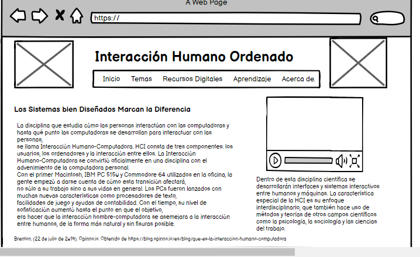

Los sistemas bien diseñados marcan la diferencia.
La disciplina que estudia cómo las personas interactúan con las computadoras y hasta qué punto las
computadoras se desarrollan para interactuar con las personas,
se llama Interacción Humano-Computadora. HCI consta de tres componentes: los usuarios, los ordenadores y la
interacción entre ellos.
La Interacción Humano-Computadora se convirtió oficialmente en una disciplina con el advenimiento de la
computadora personal.
Con el primer Macintosh, IBM PC 5150 y Commodore 64 utilizados en la oficina, la gente empezó a darse cuenta
de cómo esta transición afectará,
no sólo a su trabajo sino a sus vidas en general. Los PCs fueron lanzados con muchas nuevas características
como procesadores de texto,
facilidades de juego y ayudas de contabilidad. Con el tiempo, su nivel de sofisticación aumentó hasta el
punto en que el objetivo,
era hacer que la interacción hombre-computadora se asemejara a la interacción entre humanos, de la forma más
natural y sin fisuras posible.
